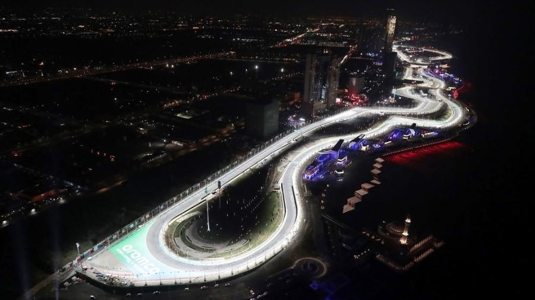
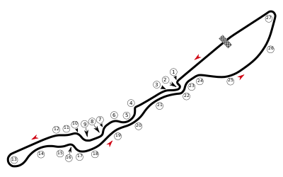

NAVEGUE
Home
Pilotos
Calendário/Tabela
Grand Prix
Construtoras
Últimas Notícias
GP da Arábia Saudita
SOBRE
A pista da Arábia Saudita é um circuito de corrida localizado na cidade de Jeddah, na costa do Mar Vermelho. Foi anunciado em 2020 como uma nova adição ao calendário da Fórmula 1 para a temporada de 2021. Com 6,175 km de extensão, é o segundo circuito mais longo do calendário, atrás apenas de Spa-Francorchamps. A pista tem 27 curvas e é projetada para ser uma das mais rápidas do mundo, com velocidades máximas esperadas de mais de 320 km/h. A primeira corrida da Fórmula 1 na pista da Arábia Saudita está prevista para acontecer em dezembro de 2021.
Circuitos Utilizados
Corniche de Gidá

INFORMAÇÕES DA CORRIDA

Localização
Gidá, Arábia Saudita
Voltas
50
Percurso
6.175 km
Total
308.750 km
Curvas
27
Pole
Sergio Perez
Anos Disputados
3
Última Disputa
2023
Maior vencedor
Lewis Hamilton
Última Corrida - Pódio
Sergio Perez